Data visualisations
30+ bespoken interactive data visualisation for deep topical analysis
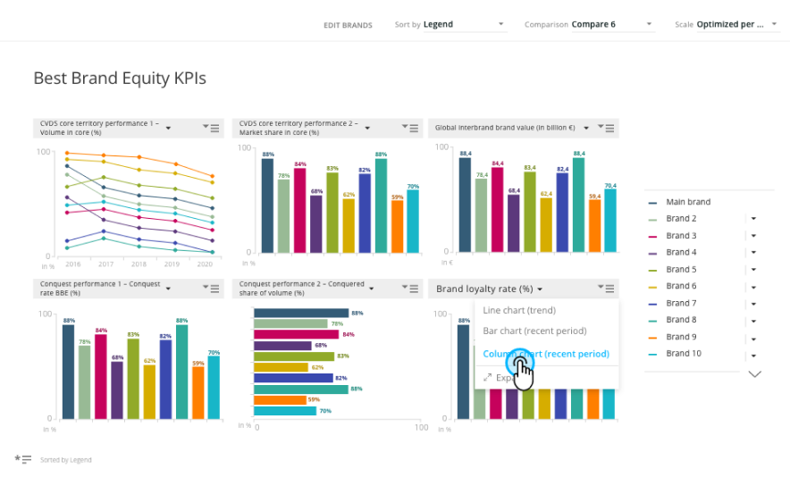
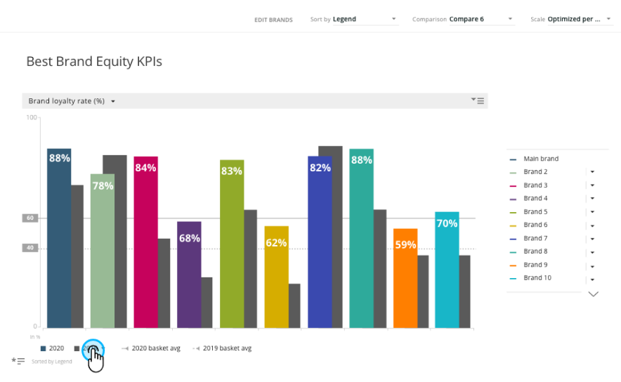
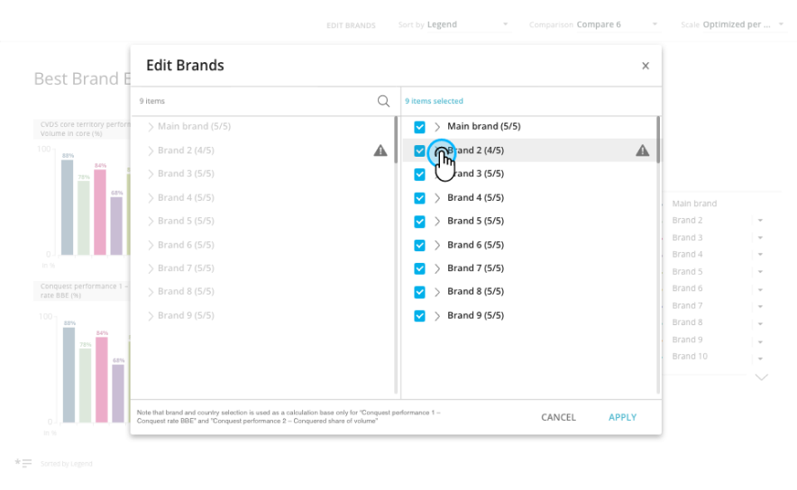
Overview
mTab's single tenant platform provided dedicated, branded analytics environments for major automotive OEMs including Toyota, Mercedes-Benz, Stellantis, and Volvo.
At its core there were two systems: Halo Reports a tool for customers to analyse data and create their own charts and reports from scratch and Discover a more guided analytical and reporting experience.
At the heart of Discover / Stories modules there were mTab Bespoken data visualisations. A set of 30+ bespoken micro application that visualise set of data and provide flexibility to view it from different angles to better get the insights.
The design team i led was responsible for designing all visualisation and interactions. We were working closely with Product team, Data Solution and customers to gather or business requirements and with Engineering team during implementation.
Challenge
The largest challenge about custom data visualisation was the amount of data we wanted to present on each screen with limited space.
Additionally each client had unique data structures, studies, branding requirements, and user expectations — yet the underlying product needed to remain consistent and maintainable.
Users ranged from seasoned researchers to business stakeholders who just needed a quick answer. tOn top of that, the interface for editing and customising slides had grown complex, creating friction for users who needed to make quick adjustments.
Additional difficulty was that all the visualisations have to be flexible enough to work within each customer corporate identities guidelines, witch translated to different colour pallets, dimensions of available areas and fonts.
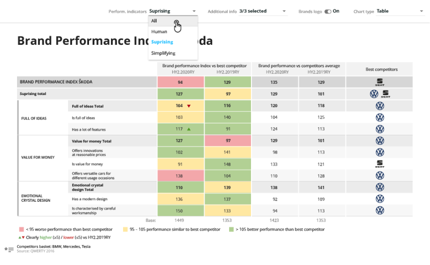
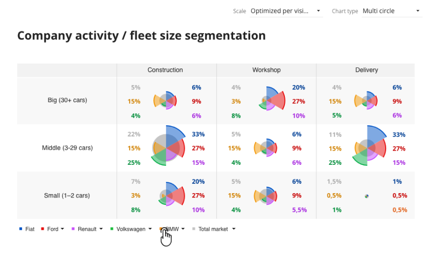
Approach
I coordinated the design team across multiple client and visualisation each considered it’s own project. My role was to make sure that all designers communicated with each other, exchanged ideas and work on common solution together.
I introduced several initiatives to unify and simplify the design process for the data visualisations. We all shared the design and had common design reviews meetings within design team, later we talked to both product managers and Data scientist on our team. When the concept was ready we had a design review with Engineering to estimate the work and prepare designs for handoff.
The design team goal was to always streamlining and standardise how users interact with and customise visualisations, reducing unnecessary complexity, and creating shared patterns that worked across all visualisation types.
Later on working closely with engineering we developed a library of common data visualisation elements and patterns and components making it a subset of our overall design system.
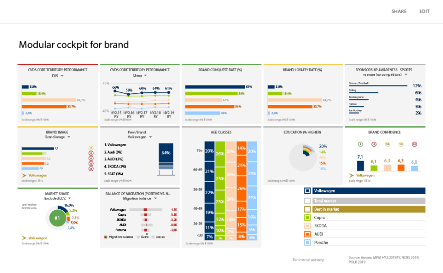
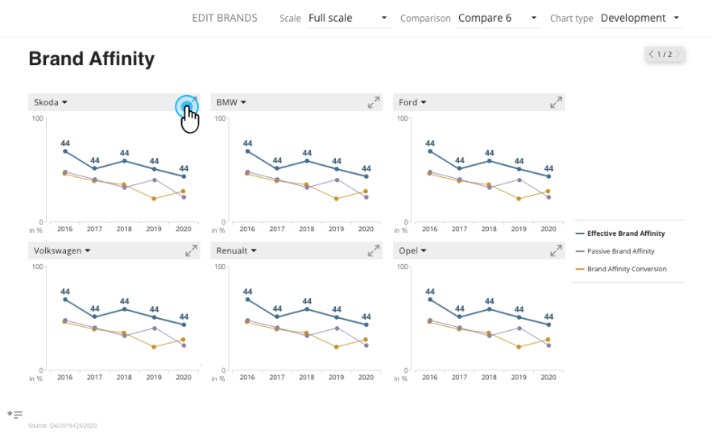
Outcome
mTab custom data visualisations the primary analytics and reporting tool for some of the world's largest automotive brands, serving research teams across global markets. The ease of use creating rich and flexible reporting and unified patterns and simplified editing experience were praised by our costumers and are used right now even after migrating to more Flexible and self service Halo reports.
What’s next
As of right now most of custom data visualisations are available for selected customers in Halo our goal is to modernise the technology behind them and use them as bases of templates and ready to use data visualisations in Halo Reports
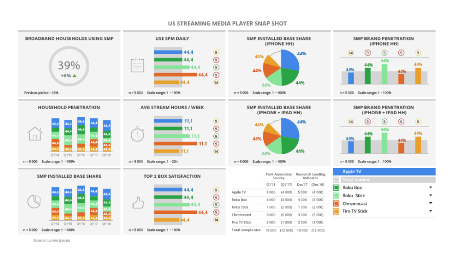
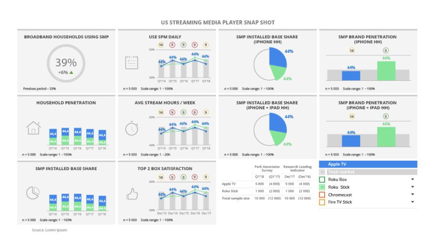
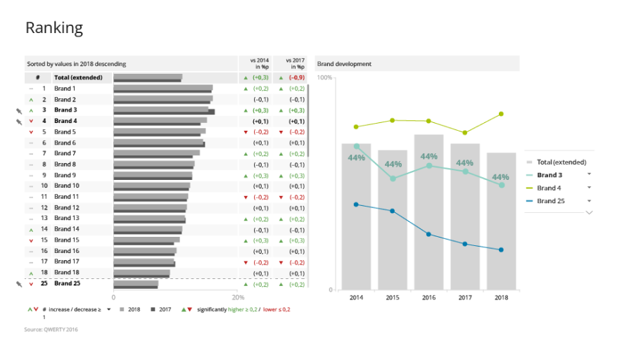
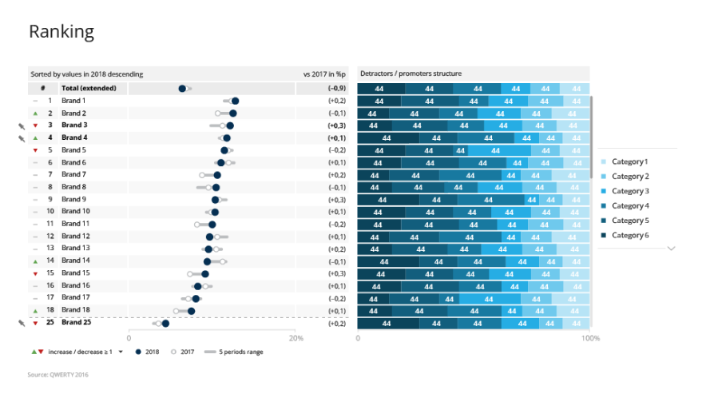
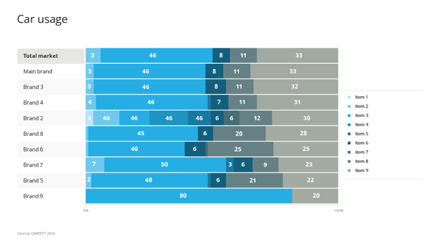
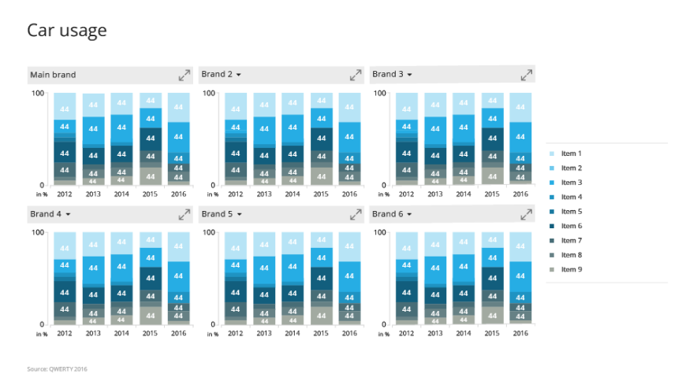
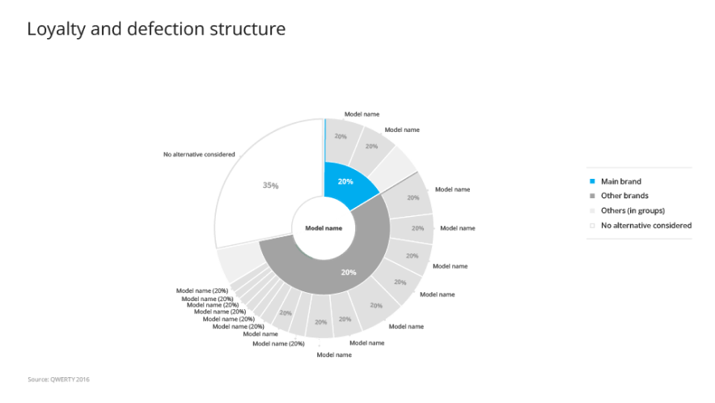
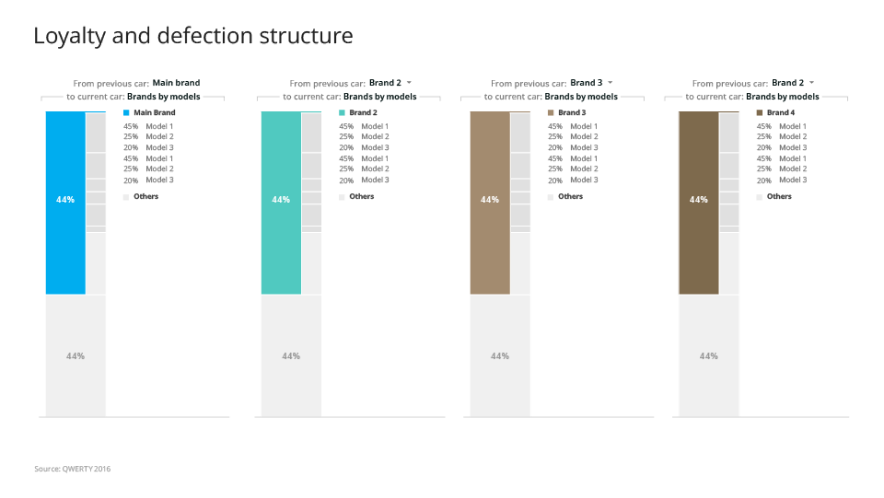
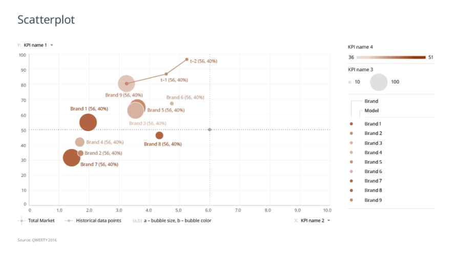
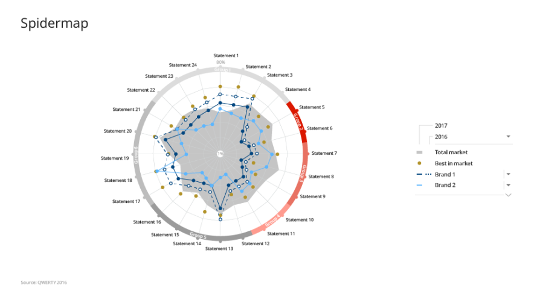
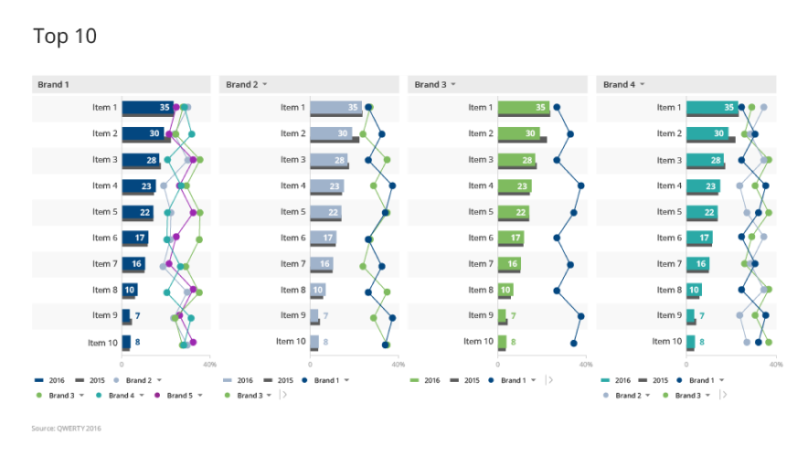
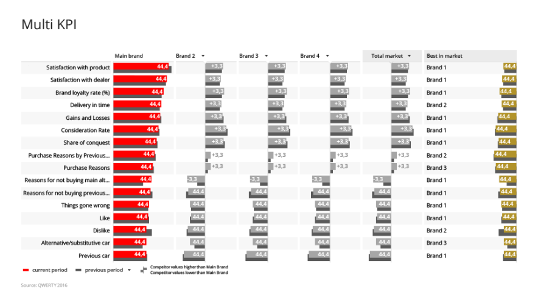